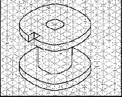
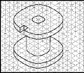

<html>
<head>
<meta name="Tech Staff - FDIDC" content="FDIDC Online Quiz Template">
<meta name="keywords" content="Online Quiz, FDIDC, Faculty Development, Instructional Technoligies">
<title>Plagiarism - Online Quiz</title>
<script language="JavaScript" src="../../../tracking_scripts.js" type="text/javascript" ></script>
<script language="javascript" type="text/javascript">
// button to gotoURL


function MM_goToURL() { //v3.0
  var i, args=MM_goToURL.arguments; document.MM_returnValue = false;
  for (i=0; i<(args.length-1); i+=2) eval(args[i]+".location='"+args[i+1]+"'");
}

// BrowserCheck Object

function BrowserCheck() {
        var b = navigator.appName
//HBS extension
        this.mac = (navigator.appVersion.indexOf('Mac') != -1)
        if (b=="Netscape") this.b = "ns"
        else if (b=="Microsoft Internet Explorer") this.b = "ie"
        else this.b = b
        this.version = navigator.appVersion
        this.v = parseInt(this.version)
        this.ns = (this.b=="ns" && this.v>=4)
        this.ns4 = (this.b=="ns" && this.v==4)
        this.ns5 = (this.b=="ns" && this.v==5)
        this.ie = (this.b=="ie" && this.v>=4)
        this.ie4 = (this.version.indexOf('MSIE 4')>0)
        this.ie5 = (this.version.indexOf('MSIE 5')>0)
        this.min = (this.ns||this.ie)
         this.CRAPBrowser = (this.ie4 && this.mac); //Cannot Resolve Addresses Properly
}

is = new BrowserCheck();

var LocFolder = GetFolder(window.location.href);
function GetFolder(LocPath){
        LocPath = ReplaceStuff('\'','%27',LocPath);
        var i = LocPath.lastIndexOf('/');
        if (i<0){i=LocPath.lastIndexOf('\\')};
        return LocPath.substring(0,i);
}

function CombineURLs(InURL){
        var i = InURL.indexOf('../');
        var s = LocFolder;
        while (i >- 1){
                s = GetFolder(s);
                InURL = InURL.substring(3,InURL.length);
                i = InURL.indexOf('../');
        }
        return s + '/' + InURL;
}

x = new Array();
function ResolveURLs(InText,Attribute){
        x.length=0;
        var Temp = InText.toLowerCase();
        var z;
        var AttLen = Attribute.length + 2;
        var y=Temp.lastIndexOf(Attribute + '="');
        while (y>-1){
                var sLoc = y+AttLen;
                if (Temp.substring(sLoc,sLoc+5) != 'http:'){
                        x[x.length]=new Array();
                        x[x.length-1][0] = sLoc;
                        z = Temp.indexOf('"',sLoc);
                        x[x.length-1][1] = z;
                        x[x.length-1][2] = InText.substring(sLoc,z);

                }
                Temp = Temp.substring(0,y);
                y=Temp.lastIndexOf(Attribute + '="');
        }
        for (var j=0; j<x.length; j++){
                InText = InText.substring(0,x[j][0]) + CombineURLs(x[j][2]) + InText.substring(x[j][1], InText.length);
        }
        return InText;
}



function ResolveAllURLs(Stuff){
        Stuff = ResolveURLs(Stuff,'href');
        Stuff = ResolveURLs(Stuff,'src');
        Stuff = ResolveURLs(Stuff,'parent.location');
        return Stuff;
}


var ExBGColor = '#ffffff';



var PageBGColor = '#ffffff';



var NavBarColor = '#ffffff';


var TextColor = '#000000';
var CurrQNum = 0;
var ALetters = 'abcdefghijklmnopqrstuvwxyz';
var CorrectIndicator = ' Right';
var IncorrectIndicator = ' Wrong';
var YourScoreIs = '<I><b>Total Score in Percentage points :</b></I>';
var Tries = 0;
var CorrectChoices = 0;
var ContinuousScoring = false;
var CorrectFirstTime = 'Questions answered correctly the first time: ';
var ExerciseTitle = '<p><font face="Arial, Helvetica, sans-serif" size="+2" color="#000000" style="font-weight:bold;">Plagiarism</font>';
var ExerciseSubtitle = '<font face="Arial, Helvetica, sans-serif" color="#000000"></font>';
//var Instructions = '<B><I>Select the best answer</I></B>';

var ShuffleQs = true;
var ShuffleAs = true;
var DefaultRight = '<b><B><font face="Arial, Helvetica, sans-serif" size= "+1" color="#12A203"> Correct Answer!</font></B></b>';
var DefaultWrong = '<b><B><font face="Arial, Helvetica, sans-serif" size= "+1" color="#FD0202"> Sorry, Wrong Answer! Try again.</font></B></b>';
var QsToShow = 15;
var ShowOneByOne = true;
var ReadingURL = '';
var EraseFeedback = true;
var EndQuiz = false;
var Score = 0;
var QuestionCount=0;
var finalOutput;

var PreviousPage = history.length;
var tempfinalOutput='';


var Qtex = ''





var NavBar='';

//Code of the Title

//var TitleCode =  '<tr><td bgcolor="#ffffff"><table width="100%" border="0" cellspacing="0" cellpadding="0"><tr><td width="50%"><div align="left"><a style="TEXT-DECORATION: none" href="javascript:window.close();" target="_parent"><font face="Arial, Helvetica, sans-serif" align="left" size="-1" color="#000000"><b></b></font></a> </div></td><td width="50%"><div align="right"><a style="TEXT-DECORATION: none" href="javascript:window.close();" target="_parent"><font face="Arial, Helvetica, sans-serif" align="right" size="-1" color="#000000"><b>Close</b></font></a></div></td></tr><tr><td colspan="2"><div align="center">';
var TitleCode =  '<tr><td bgcolor="#ffffff"><table width="100%" border="0" cellspacing="0" cellpadding="0"><tr><td width="50%"><div align="left"><a style="TEXT-DECORATION: none" target="_parent"><font face="Arial, Helvetica, sans-serif" align="left" size="-1" color="#000000"><b>Select the correct response before proceeding to next question.</b></font></a> </div></td><td width="50%"><div align="right"><a style="TEXT-DECORATION: none" href="javascript:window.close();" target="_parent"><font face="Arial, Helvetica, sans-serif" align="right" size="-1" color="#000000"><b>Close</b></font></a></div></td></tr><tr><td colspan="2"><div align="center">';
TitleCode += '<font size="+1" face="Arial, Helvetica, sans-serif" color="#ffffff">' + ExerciseTitle+ '</font></div></td></tr></table>';
TitleCode += '</td></tr>';

//Code for buttons move left and move right

var QButtonsOpener = '<table border="0" width="100%" cellpadding="10">';
QButtonsOpener += '<tr><td align="center" valign="middle">';
//QButtonsOpener += '<font size="+1"><input type="button" value="Previous Question" onclick="parent.ChangeQ(-1)"></input>';
var QButtonsCloser = '<input type="button" value="Next Question" onclick="parent.ChangeQ(1)"></input>';
QButtonsCloser += '</font></td></tr></table>';

var TableOpener = '<form name="QForm">';
TableOpener += '<table border="0" width="85%">';
var QRow = '<tr><td valign="top" bgcolor="#ffffff" align="right">';

QRow += '<font size="2" face="Arial, Helvetica, sans-serif" color="#000000"><B>[QNumber])</B></font></td>';

QRow += '<td colspan="3" valign="top" bgcolor="#ffffff"><font size="-1" face="Arial, Helvetica, sans-serif" color="#000000">[Question]<br />&nbsp;';

QRow += '</font></td></tr>';




var MARow = '<tr><td></td><td valign="top" bgcolor="#ffffff" colspan="3"><input type="checkbox" name="A_[QNum]_[ANum]" value="[Correct]"></input>';
MARow += '<font size="-1" face="Arial, Helvetica, sans-serif" color="#000000">[Ans]</font></td></tr>';


var CheckButton = '<tr><td></td><td valign="top" bgcolor="#ffffff" ><input type="button" value="Check"';
CheckButton += ' onclick="parent.CheckMulti([QNum])"></input></td><td>test</td></tr>';

var ARow = '<tr><td></td><td valign="center" bgcolor="#ffffff"><input type="button" value="[ALetter]" OnClick="parent.CheckAnswer([QNum],[ANum])"></input></td>';
ARow += '<td width="100%" bgcolor="#ffffff"><font size="-1" face="Arial, Helvetica, sans-serif" color="#000000">[Ans]</font></td>';
ARow += '<td valign="top" bgcolor="#ffffff"></td></tr>';




TableCloser = '</table></form>';

function GoBack(){
        var BackSkip = history.length - PreviousPage;
        if (BackSkip > 0){
                history.go((BackSkip+1)*-1);
        }
        else{
                parent.history.back();
        }
}

function ReduceItems(){
        var ItemToDump=0;
        var j=0;
        while (I.length > QsToShow){
                ItemToDump = Math.floor(I.length*Math.random());
                for (j=ItemToDump; j<(I.length-1); j++){
                        I[j] = I[j+1];
                }
                I.length = I.length-1;
        }
}

function Shuffle(InArray){
        Temp = new Array();
        var Len = InArray.length;

        var j = Len;

        for (var i=0; i<Len; i++){
                Temp[i] = InArray[i];
        }

        for (i=0; i<Len; i++){
                Num = Math.floor(j  *  Math.random());
                InArray[i] = Temp[Num];

                for (var k=Num; k < j; k++) {
                        Temp[k] = Temp[k+1];
                }
                j--;
        }
        return InArray;
}

function WriteFeedback(Feedback) {
//Build the output string
        var OutString = '';
        OutString += '<html>';
        OutString += '<body  topmargin="0" background="" bgcolor="#ffffff" text="#000000" link="#000066" vlink="#99ff99">';
        OutString += '<center><table border="0" cellpadding="5" cellspacing="1" width="85%" height="100%">';
        //OutString += NavBar;
        if (Feedback.length>0){
                OutString += '<tr><td bgcolor="#ffffff" align="center" valign="top" >';
                OutString += '<font face="Arial, Helvetica, sans-serif" size="-1" color="#000000">';
                OutString += Feedback;
                OutString += '</font></td></tr>'
        }

        OutString += '</table></center></body></html>';

        if (is.CRAPBrowser){OutString=ResolveAllURLs(OutString);}

//Write it to the frame
        TopFrame.document.clear();
        TopFrame.document.open();
        TopFrame.document.write(OutString);
        TopFrame.document.close();
}

function StartUp(){

//Reduce array if required
        if (QsToShow < I.length){
                ReduceItems();
        }

//Shuffle stuff if required

        if (ShuffleQs == true){
                I = Shuffle(I);
        }

       // if (ShuffleAs == true){
               // for (var i=0; i<I.length; i++){
               //         I[i][1] = Shuffle(I[i][1]);
               // }
     //   }

//Create arrays
        CreateStatusArrays();



//Show the first question or all of them
        if (ShowOneByOne == false){
                ShowAllQs();
        }
        else{
                ShowQuestion(CurrQNum);
        }

//Write the top frame

        //WriteFeedback(Instructions);
}


I = new Array();

I[0] = new Array();
I[0][0]='<b>Source text</b>: Some greenhouse gases occur naturally in the atmosphere, while others result from human activities. Naturally occurring greenhouse gases include water vapor, carbon dioxide, methane, nitrous oxide, and ozone.<br><br>United States. Environmental Protection Agency. Global Warming-Emissions. 27 Apr. 2005. 31 Aug. 2005.<br>http://yosemite.epa.gov/oar/globalwarming.nsf/content/emissions.html<br><br><b>Draft</b>: According to the EPA\'s website, greenhouse gases like water vapor, carbon dioxide, methane, nitrous oxide, and ozone occur naturally in the atmosphere.';
I[0][1] = new Array();
I[0][1][0] = new Array();
I[0][1][0][0]='Plagiarized.';
I[0][1][0][1]="Even though the writer identified that the information was found on the Environmental Protection Agency's Web site, this is an example of plagiarism because the writer uses some of the exact words from the source without putting the words in quotation marks. In order to correct this, the writer should indicate the direct quote with quotation marks and include a proper citation in the text.";
I[0][1][0][2] = 1;
I[0][1][1] = new Array();
I[0][1][1][0]='Not plagiarized.';
I[0][1][1][1]="Even though the writer identified that the information was found on the Environmental Protection Agency's Web site, this is an example of plagiarism because the writer uses some of the exact words from the source without putting the words in quotation marks. In order to correct this, the writer should indicate the direct quote with quotation marks and include a proper citation in the text.";
I[0][1][1][2] = 0;
I[0][2] = 0;

I[1] = new Array();
I[1][0]='<b>Source text</b>: Victims of Hurricane Katrina are attempting to recover from the massive storm that is still making its way across the mid-Atlantic States. American Red Cross volunteers have been deployed to the hardest hit areas of Katrina\'s destruction, supplying hundreds of thousands victims left homeless with critical necessities. By making a financial gift to Hurricane 2005 Relief, the Red Cross can provide shelter, food, counseling and other assistance to those in need.<br><br>American Red Cross. Credit Card Contribution. 31 Aug. 2005.<br>http://arc.convio.net/site/PageServer?pagename=ntld_main.<br><br><b>Draft</b>: The victims of the recent hurricane, Katrina, are facing huge losses, both financially and emotionally. In order for these people to begin to regain their lives back, it\'s important for citizens to donate funds to agencies like the Red Cross. These funds can be used to help provide counseling and items like food and clothing to the victims ("American").<br><br>American Red Cross. Credit Card Contribution. 31 Aug. 2005.<br>http://arc.convio.net/site/PageServer?pagename=ntld_main.';
I[1][1] = new Array();
I[1][1][0] = new Array();
I[1][1][0][0]='Plagiarized.';
I[1][1][0][1]='In this draft, the writer summarizes the original source and includes an in-text parenthetical citation according to the MLA style of documentation.';
I[1][1][0][2] = 0;
I[1][1][1] = new Array();
I[1][1][1][0]='Not Plagiarized.';
I[1][1][1][1]='In this draft, the writer summarizes the original source and includes an in-text parenthetical citation according to the MLA style of documentation.';
I[1][1][1][2] = 1;
I[1][2] = 0;

I[2] = new Array();
I[2][0]='<b>Source text</b>: Fancy being buried on your farm under a favourite tree? It could be the only place you will rest in peace, as Tom Montgomery discovers there is a shortage of space in the cemeteries and one solution the government is considering is the re-use of graves. In 100 years we could be dug up and buried deeper to make way for somebody else on top. John Bradfield, a conservationist and social worker, offers another option. He is a leading exponent of do-it-yourself green burials in the countryside. Ex-Beatle George Harrison chose a green burial. If the graveyards are now overflowing, some argue, why are planners and bureaucrats so hostile to the idea of someone being buried in a beauty spot? There is no law against it. A one-off burial can take place anywhere and you don\'t need planning permission. "There is a lot of misinformation about green burials spread by local authorities. Some are dishing out complete nonsense," says John.<br><br>Montgomery, Tom. "Really Resting in Peace – Green Countryside Burials." <em>Farmers Weekly</em> 140.8 (2004): F20.<br><br><b>Draft</b>: Green burials are becoming more popular in the United States. In England, however, they have been in happening for quite some time. A leading figure in the green burial movement is John Bradfield. As a conservationist, he is wary of the fact that in 100 years, the dead may have to be buried on top of the already deceased. Therefore, he believes green burials, which allow people to be buried in a beautiful spot, are something more people should consider.';
I[2][1] = new Array();
I[2][1][0] = new Array();
I[2][1][0][0]='Plagiarized.';
I[2][1][0][1]="This is an example of plagiarism. The writer summarizes the information found in Tom Montgomery's article but does not mention the author of the original piece or where the information is from. In order to correct this, the writer should indicate the author, as well as the publication from which the information is taken.";
I[2][1][0][2] = 1;
I[2][1][1] = new Array();
I[2][1][1][0]='Not Plagiarized.';
I[2][1][1][1]="This is an example of plagiarism. The writer summarizes the information found in Tom Montgomery's article but does not mention the author of the original piece or where the information is from. In order to correct this, the writer should indicate the author, as well as the publication from which the information is taken.";
I[2][1][1][2] = 0;
I[2][2] = 0;

I[3] = new Array();
I[3][0]='Source text</b>: Pianists can benefit greatly from singing one part while playing another. We can, of course, sing the melody and play only the accompaniment, but it is perhaps even more beneficial to sing the parts that are hardest to hear and think: the bass line, an inner chromatic voice or long notes whose sounds fade away. Like a flashlight in the dark, singing trains our minds on the areas needing clarity and illumination. We need not worry if our singing is not beautiful in tone or even accurate in pitch; it is much more important we sing with character and rhythmic vitality.<br><br>Johanson, Ken. (2005) "What Do You Think about When You Play?" <em>The American Music Teacher,</em> 55.1, 31-3.<br><br><b>Draft</b>: Therefore, pianists need to realize that the connection between what they play and what they sing. According to Johanson (2005), "Pianists can benefit greatly from singing one part while playing another" (p. 33). He compares the effect of singing difficult parts to "a flashlight in the dark" (p. 33).<br><br>Johanson, Ken. (2005) "What Do You Think about When You Play?" <em>The American Music Teacher,</em> 55.1, 31-3.';
I[4][1] = new Array();
I[4][1][0] = new Array();
I[4][1][0][0]='Plagiarized.';
I[4][1][0][1]='The writer has correctly included citations according to the APA style of citations. Direct quotes are within quotation marks, and the author, year, and page numbers from the source are included.';
I[4][1][0][2] = 0;
I[4][1][1] = new Array();
I[4][1][1][0]='Not Plagiarized.';
I[4][1][1][1]='The writer has correctly included citations according to the APA style of citations. Direct quotes are within quotation marks, and the author, year, and page numbers from the source are included.';
I[4][1][1][2] = 1;
I[4][2] = 0;

I[5] = new Array();
I[5][0]='<b>Source text</b>: Behavioral disorders also known as conduct disorders are one of the most common forms of psycho pathology among children and young adults and is the most frequently cited reason for referral to mental health services. The appearance of behavioral disorders is increasing dramatically in our K-12 classrooms. As a result their presence severely constrains the ability of the school systems to educate students effectively. The prevalence of behavioral problems among children and young adults is substantial. Many surveys indicate that behavioral disorders vary among young adults, ranging from 2 and 6% in K-12 students. This percentage translates into 1.3 to 3.8 million cases of behavioral disorders among the school and pre-college population.<br><br>"Strategies for Teaching Students with Behavioral Disorders." 20 Apr. 2005. 30 Aug. 2005. <br>http://www.as.wvu.edu/~scidis/behavior.html#sect0.<br><br><b>Draft</b>: School systems have a difficult time educating some children and young adults because, often, the presence of behavioral problems "severely constrains the ability of the school systems to educate students effectively." Furthermore, surveys have been done which indicate that somewhere between "1.3 and 3.8 million cases of behavioral disorders" occur in children and young adults.';
I[5][1] = new Array();
I[5][1][0] = new Array();
I[5][1][0][0]='Plagiarized.';
I[5][1][0][1]='This is plagiarism. The writer correctly puts quotation marks around information taken directly from the sources but has not indicated where this information is from or provided in-text citations.';
I[5][1][0][2] = 1;
I[5][1][1] = new Array();
I[5][1][1][0]='Not Plagiarized.';
I[5][1][1][1]='This is plagiarism. The writer correctly puts quotation marks around information taken directly from the sources but has not indicated where this information is from or provided in-text citations.';
I[5][1][1][2] = 0;
I[5][2] = 0;

I[6] = new Array();
I[6][0]='<b>Source text</b>: 1880 - when Munch decided to become a painter - saw a marked revolution in the focus of Norwegian art. The Norwegian artists, who had previously been trained abroad, first in Germany and later in France, now returned to Norway and proclaimed Naturalism as the only possible direction for young Norwegian art. This implicitly meant saying farewell to the demand for rigid academic training and to the German focus in Norwegian art, and instead a turning to the artistic environment of Paris. Naturalism, with its basis in studying nature, resulted in the conviction that, instead of formal training, it was necessary for young artists to learn from nature by painting directly from it or from a model.<br><br>Eggum, Arne. The Munch Museum – Life and Work – On Munch\'s Paintings. 30 Aug. 2005. <br>http://www.munch.museum.no/content.aspx?id=15&mid=&lang=en.<br><br><b>Draft</b>: One of Norway\'s most famous artists is Edvard Munch. His most famous painting, of course, is <em>The Scream</em>. However, before one can analyze the significance of this painting, it is important to understand that when Munch began painting, there was a "marked revolution in the focus of Norwegian art" (Eggum). Essentially, in Norway at this time, there was a movement away from the "rigid academic training [...] instead turning to the artistic environment of Paris" (Eggum)<br><br>Eggum, Arne. The Munch Museum – Life and Work – On Munch\'s Paintings. 30 Aug. 2005.<br> http://www.munch.museum.no/content.aspx?id=15&mid=&lang=en.';
I[6][1] = new Array();
I[6][1][0] = new Array();
I[6][1][0][0]='Plagiarized.';
I[6][1][0][1]='The writer, using the MLA style of documentation, uses direct quotes correctly in this example – providing quotation marks around information taken word for word and the author\'s last name. Normally, the page number of the source would be included as well. However, because this Web site is not paginated, page numbers are omitted.';
I[6][1][0][2] = 0;
I[6][1][1] = new Array();
I[6][1][1][0]='Not Plagiarized.';
I[6][1][1][1]='The writer, using the MLA style of documentation, uses direct quotes correctly in this example – providing quotation marks around information taken word for word and the author\'s last name. Normally, the page number of the source would be included as well. However, because this Web site is not paginated, page numbers are omitted.';
I[6][1][1][2] = 1;
I[6][2] = 0;

I[7] = new Array();
I[7][0]='<b>Source graphic</b>: <br><br>Figure 3. Isometric Sketch with Circular Features.<br><br>Source: Instructional Media Lab. ME210 Engineering Design Graphics. University of Texas-Austin. 30 Aug. 2005. http://www.me.utexas.edu/~rbarr/sketching/isometric.html.<br><br><b>Draft</b>: In order to learn how to draft an isometric sketch with circular features, one should visit the Mechanical Engineering 210 webpage at the University of Texas-Austin\'s website. Here, students can find detailed sketches (including the figure below) of isometric sketches. This is a valuable resource tool for engineering students.<br><br><br>Figure 3. Isometric Sketch with Circular Features from Instructional Media Lab. ME210 <br>Engineering Design Graphics. University of Texas-Austin. 30 Aug. 2005.<br>http://www.me.utexas.edu/~rbarr/sketching/isometric.html.';
I[7][1] = new Array();
I[7][1][0] = new Array();
I[7][1][0][0]='Plagiarized.';
I[7][1][0][1]='In this example, the writer correctly integrates a figure found on a Web site. The writer named the figure in his or her text, as well as identified where the figure is from in an in-text citation.';
I[7][1][0][2] = 0;
I[7][1][1] = new Array();
I[7][1][1][0]='Not Plagiarized.';
I[7][1][1][1]='In this example, the writer correctly integrates a figure found on a Web site. The writer named the figure in his or her text, as well as identified where the figure is from in an in-text citation.';
I[7][1][1][2] = 1;
I[7][2] = 0;

I[8] = new Array();
I[8][0]='<b>Source text</b>: Understanding the Causes<br>Obesity prevention involves a focus on <em>energy balance</em>--calories consumed versus calories expended--so taking action against childhood obesity must address the factors that influence both eating and physical activity. Although it appears straightforward, these factors result from complex interactions across a number of social, environmental, and policy contexts. American children live in a society that has changed dramatically in the three decades over which the obesity epidemic has developed.<br><br>Institute of Medicine. Focus on Childhood Obesity. (2005). The National Academies. Retrieved 29 Aug. 2005 from <br>http://www.iom.edu/focuson.asp?id=22593&<br><br><b>Draft</b>: Childhood obesity is an increasing epidemic. While the prevention of obesity seems so easy – people must consume fewer calories than they expend – children in the U.S. are part of a society that has changed greatly in the last thirty years.';
I[8][1] = new Array();
I[8][1][0] = new Array();
I[8][1][0][0]='Plagiarized.';
I[8][1][0][1]='This is an example of plagiarism because the writer does not indicate where this information is from anywhere in his or her summary. Additionally, some of the language used mirrors that of the original text too directly. In order to correct this type of plagiarism, the writer should either rewrite the summary in his or her own words or use quotation marks around information taken from the source word-for-word. S/he must also provide in-text citation information.';
I[8][1][0][2] = 1;
I[8][1][1] = new Array();
I[8][1][1][0]='Not Plagiarized.';
I[8][1][1][1]='This is an example of plagiarism because the writer does not indicate where this information is from anywhere in his or her summary. Additionally, some of the language used mirrors that of the original text too directly. In order to correct this type of plagiarism, the writer should either rewrite the summary in his or her own words or use quotation marks around information taken from the source word-for-word. S/he must also provide in-text citation information.';
I[8][1][1][2] = 0;
I[8][2] = 0;

I[9] = new Array();
I[9][0]='<b>Source text</b>: To say that writing is artificial is not to condemn it but to praise it. Like other artificial creations and indeed more than any other, it is utterly invaluable and indeed essential for the realization of fuller, interior, human potentials. Technologies are not mere exterior aids but also interior transformations of consciousness, and never more than when they affect the word. Such transformations can be uplifting. Writing heightens consciousness. Alienation from a natural milieu can be good for us and indeed is in many ways essential for full human life. To live and to understand fully, we need not only proximity but distance. This writing provides for consciousness as nothing else does (81).<br><br>Ong, Walter. <em>Orality and Literacy</em>. London: Routledge, 2002.<br><br><b>Draft</b>: In the past twenty years technology has changed the way we work, study, and communicate. However, few people realize that new technology also affects how we think. Long before the Internet, the development of writing changed the way people thought about the world. Walter Ong writes, "Technologies are not mere exterior aids but also interior transformations of consciousness" (81). Just like the written word changed the lives and cultures of people in the past, the Internet is changing how we think and process information in the present. <br><br>Ong, Walter. <em>Orality and Literacy</em>. London: Routledge, 2002.';
I[9][1] = new Array();
I[9][1][0] = new Array();
I[9][1][0][0]='Plagiarized.';
I[9][1][0][1]="This example shows a source correctly integrated into the writer's draft. The writer has used the MLA style of documentation and has correctly included direct quotes and in-text citations.";
I[9][1][0][2] = 0;
I[9][1][1] = new Array();
I[9][1][1][0]='Not Plagiarized.';
I[9][1][1][1]="This example shows a source correctly integrated into the writer's draft. The writer has used the MLA style of documentation and has correctly included direct quotes and in-text citations.";
I[9][1][1][2] = 1;
I[9][2] = 0;
Status = new Array();


function CreateStatusArrays(){
        for (var x=0; x<I.length; x++){
                Status[x] = new Array();
                Status[x][0] = 0; // Question not done yet
                Status[x][1] = new Array(); //for tracking whether answers chosen
                for (var y=0; y<I[x][1].length; y++){
                        Status[x][1][y] = '0'; //Answers not chosen yet
                }
                Status[x][2] = 0; //Wrong tries at this question so far
                Status[x][3] = 0; //For storing score out of one on this question
        }
}

function UpdateQuestionStatus(QNum){
//        Finished = true;
        if (Status[QNum][2] <= Status[QNum][1].length-1){
                Status[QNum][0] = 1;
                for (var i=0; i<Status[QNum][1].length; i++){
                        if (Status[QNum][1][i] == '0'){
                                Status[QNum][1][i] = 'R';
                        }
                }
        }		
}

function ReplaceStuff(Token, Replacement, InString){
        var i = InString.indexOf(Token);
        var FirstBit = '';
        var LastBit = '';
        while (i>-1){
                FirstBit = InString.substring(0, i);
                LastBit = InString.substring(i + Token.length, InString.length);
                InString = FirstBit + Replacement + LastBit;
                i = InString.indexOf(Token);

        }
        return InString;
}

function ChangeQ(ChangeBy){
        var NewNum = CurrQNum + ChangeBy;
        if ((NewNum >= 0)&&(NewNum<I.length)){
                CurrQNum = NewNum;
                ShowQuestion(CurrQNum);
        }
        var CurrScore = '';
//		ContinuousScoring = true;
         if ((ContinuousScoring == true)&&(EraseFeedback == false)){
                CalculateScore();
                var CurrScore = YourScoreIs + ' ' + Score + '%.';
                WriteFeedback(CurrScore);
        }	
}

function BuildQuestion(QNum){
		QuestionCount+=1;
        if (I[QNum][2] == 0){
                var Temp = ReplaceStuff('[Question]', I[QNum][0], QRow);

                var AnsRows = '';
                for (var i=0; i<I[QNum][1].length; i++){
                        TempAns = ARow;
                        TempAns = ReplaceStuff('[ANum]', i, TempAns);
                        TempAns = ReplaceStuff('[ALetter]', ' ' + ALetters.charAt(i) + ' ', TempAns);
                        TempAns = ReplaceStuff('[Ans]', I[QNum][1][i][0], TempAns);
                        AnsRows += TempAns;
                }
                Temp += AnsRows;
                Temp = ReplaceStuff('[QNumber]', QNum+1, Temp);
                Temp = ReplaceStuff('[QNum]', QNum, Temp);
        }
        else{
                var Temp = ReplaceStuff('[Question]', I[QNum][0], QRow);
                var AnsRows = '';
                for (var i=0; i<I[QNum][1].length; i++){
                        TempAns = MARow;
                        TempAns = ReplaceStuff('[ANum]', i, TempAns);
                        TempAns = ReplaceStuff('[Correct]', I[QNum][1][i][2], TempAns);
                        TempAns = ReplaceStuff('[Ans]', I[QNum][1][i][0], TempAns);
                        AnsRows += TempAns;
                }
                Temp += AnsRows;
                Temp += CheckButton;
                Temp = ReplaceStuff('[QNumber]', QNum+1, Temp);
                Temp = ReplaceStuff('[QNum]', QNum, Temp);
        }
        return Temp;
}


var Finished = true;
if (Status[i][0] == 0){Finished = true;
QButtonsCloser = '';}


function DisplayExercise(StuffToDisplay){
//Build the output string
        var OutString = '';
        OutString += '<html>';
        OutString += '<body  topmargin="0" background="" bgcolor="#ffffff" text="#000000" link="#000066" vlink="#99ff99">';
        OutString += '<br><center><table border="1" cellpadding="5" cellspacing="1" width="85%">';
        OutString += TitleCode;
        //OutString += '<form name="form1" method="post" action=""><div align="center"><input name="Quiz" type="button" id="Quiz" onClick="MM_goToURL('parent','file:///C|/Documents%20and%20Settings/satha/quiz/samplecode.htm');return document.MM_returnValue" value="Take the Quiz"><input name="quit" type="button" id="quit" onClick="window.close()" value="quit"></div></form>';
        OutString += '<tr><td bgcolor="#ffffff" align="center">';
        OutString += '<font face="Arial, Helvetica, sans-serif" size="-1">';
        OutString += StuffToDisplay;
if(QuestionCount == 10)			
QButtonsCloser = '';
        OutString += QButtonsCloser;

        OutString += '</font></td></tr>';
        OutString += NavBar;

        OutString += '</table></center></body></html>';

        if (is.CRAPBrowser){OutString=ResolveAllURLs(OutString);}

//Write it to the frame
        BottomFrame.document.clear();
        BottomFrame.document.open();
        BottomFrame.document.write(OutString);
        BottomFrame.document.close();

        function MM_goToURL() { //v3.0
  var i, args=MM_goToURL.arguments; document.MM_returnValue = false;
  for (i=0; i<(args.length-1); i+=2) eval(args[i]+".location='"+args[i+1]+"'");
}
}


function ShowAllQs(){
        var Output = '';
        for (var i=0; i<I.length-1; i++){
                Output = Output + BuildQuestion(i);
                Output = Output + '<tr><td colspan="4"><hr></td></tr>';
        }
        Output = Output + BuildQuestion(I.length-1);
        Output = TableOpener + Output + TableCloser;
        DisplayExercise(Output);
}

function ShowQuestion(QNum){
//First, create the Q number readout at the top
        var Readout = (QNum+1) + ' of ' + I.length;
        while (Readout.length < 7){
                Readout = ' ' + Readout + ' ';
        }
        Readout = Readout;

        var Output = BuildQuestion(QNum);

        Output = TableOpener + Output + TableCloser;

        DisplayExercise(Readout + Output);

//Mark the answers already done
        for (i=0; i<Status[QNum][1].length; i++){
                if (Status[QNum][1][i] == 'R'){
                        MarkAnswer(QNum,i,true, I[QNum][1][i][1])
                }
                if (Status[QNum][1][i] == 'W'){
                        MarkAnswer(QNum,i,false, I[QNum][1][i][1])
                }
                if (Status[QNum][1][i] == 'C'){
                        CheckCheckbox(QNum,i);
                }
        }
//Eliminate feedback from previous question
        if (EraseFeedback == true){
                WriteFeedback('');
        }
}

function CheckMulti(QNum){
        var TotWrong = 0;
        var Output = '';
        var TotAns = I[QNum][1].length;
        for (var i=TotAns-1; i>=0; i--){
//Find any incorrect choices

                var b = eval('BottomFrame.document.QForm.A_' + QNum + '_' + i);

                if (b != null){
//if it's wrong, count it
                        if (b.checked == true){
                                Status[QNum][1][i] = 'C';
                        }
                        else{
                                Status[QNum][1][i] = 'U';
                        }
                        if (((b.checked == true) && (b.value == "0"))||((b.checked == false)&&(b.value == "1"))){
                                TotWrong++;
                        }
                }
        }

        if (TotWrong == 0){
                Output = DefaultRight;
        }
        else{
                Output = DefaultWrong + '<br />' + (TotAns-TotWrong) + '/' + TotAns;
        }

//If you haven't tried the question before
        if (Status[QNum][0] == 0){
                if (TotWrong > 0){
                        Status[QNum][2]++;
                }
                if (TotWrong == 0){
                        Status[QNum][0] = 1;
//Calculate the score for this question as a floating-point fraction of 1
                        Status[QNum][3] =  ((Status[QNum][1].length - Status[QNum][2]) - 1) / (Status[QNum][1].length - 1);
//If less than zero, set to zero
                        if (Status[QNum][3] < 0){Status[QNum][3] = 0;}
                }
        }

//Check whether the quiz is finished

        for (var i=0; i<Status.length; i++){
                if (Status[i][0] == 0){Finished = false;}
        }





//Calculate the score if needed

        if (Status[QNum][0] == 1){
//		ContinuousScoring = true;
                if ((Finished==true)||(ContinuousScoring==true)){
                        CalculateScore();
                        Output = Output + '<br />' + YourScoreIs + ' ' + Score + '%.';
                }
               if (Finished == true){
                        EraseFeedback = false;
                        var CFT = 0;
                        for (i=0; i<I.length; i++){
                                if (Status[i][2] == 0){
                                        CFT++;
                                }
                        }
					if(flag1 == 0)
					{							
		                Output += '<br />' + CorrectFirstTime + CFT + '/' + I.length;
						updateParScore(CFT);				
						Output += finalOutput;
						finalOutput = Output;
						flag1 = 1;
					}
					else
					{
						Output = finalOutput;
					}

                }

        }





//Show the feedback (||(EraseFeedback = false))
        if (Output.length > 0){
                WriteFeedback(Output);
        }

}

function CheckAnswer(QNum, ANum){
        var Output = '';

        if (Output==''){
                if (I[QNum][1][ANum][2] == 1){
                        Output = DefaultRight +'<br>';
                        Output += I[QNum][1][ANum][1];
                }
                else{
                        Output = DefaultWrong + '<br>';
                        Output += I[QNum][1][ANum][1];
                }
        }

//If it's not been previously answered correctly
        if (Status[QNum][0] == 0){
//If it's a correct answer
                if (I[QNum][1][ANum][2] == 1){
                        Status[QNum][0] = 1;//Mark the Q as done
                        Status[QNum][1][ANum] = 'R';
                        MarkAnswer(QNum, ANum, true, I[QNum][1][ANum][1]);
//Calculate the score for this question as a floating-point fraction of 1
                        var PossibleWrongs = 0;
                        for (var i=0; i<I[QNum][1].length; i++){
                                if (I[QNum][1][i][2] == 0){
                                        PossibleWrongs++;
                                }
                        }

                        if (PossibleWrongs == 0){PossibleWrongs = 1;}

                        Status[QNum][3] = 1 - (Status[QNum][2]/PossibleWrongs);

//If less than zero, set to zero
                        if (Status[QNum][3] < 0){Status[QNum][3] = 0;}
                }
                else{
										
                        if (Status[QNum][1][ANum] != 'W'){
                                Status[QNum][1][ANum] = 'W';
                                MarkAnswer(QNum, ANum, false, I[QNum][1][ANum][1]);
                                Status[QNum][2]++; //increment wrong tries for this Q
                        }
                }
        }

        UpdateQuestionStatus(QNum);

//Check whether the quiz is finished
        var Finished = true;
        for (var i=0; i<Status.length; i++){
                if (Status[i][0] == 0){Finished = false;}

        }

//Calculate the score if needed

        if (Status[QNum][0] == 1){
//		ContinuousScoring = true;
                if ((Finished==true)||(ContinuousScoring==true)){
                        CalculateScore();
                        Output = Output + '<br />' + YourScoreIs + ' ' + Score + '%.';
//						Output = Output + '<br /><input type=\"
                }
				
                if (Finished == true){
                        EraseFeedback = false;
                        var CFT = 0;
                        for (i=0; i<I.length; i++){
                                if (Status[i][2] == 0){
                                        CFT++;
                                }
                        }

					//if(flag1 == 0)
					//{							
		                Output += '<br />' + CorrectFirstTime + CFT + '/' + I.length;
						
						//finalOutput = Output;
						Output += '<br><br><a style="TEXT-DECORATION: none" href="javascript:window.close();" target="_parent"><font face="Arial, Helvetica, sans-serif" align="right" size="-1" color="#000000"><b>Quiz Completed. Close quiz window and return to tutorial.</b></font></a>'
						/*if(flag1 == 0)
					{
						updateParScore(CFT);				
						Output += finalOutput;
						tempfinalOutput=finalOutput;
						flag1 = 1;
					}
				
					else
					{
						Output += tempfinalOutput;
					}*/
				}
					//	Output += finalOutput;
					//	finalOutput = Output;
					//	flag1 = 1;
					//}
					//else
					//{
					//	Output = finalOutput;
					//}
				
                
 
        }





//Show the feedback
        if (Output.length > 0){
                WriteFeedback(Output);
        }
}

function CalculateScore(){
        var TriedQs = 0;
        var TotalScore = 0;
        for (var i=0; i<Status.length; i++){
                if ((Status[i][2] > 0)||(Status[i][3] == 1)){
                        TriedQs++;
                        TotalScore += Status[i][3];
                }
        }
        if (TriedQs == 0){
                Score = 0;
        }
        else{
                Score = (Math.floor(100 * (TotalScore/TriedQs)));
        }

}

function MarkAnswer(QNum, ANum, Right, QTex){
         var Mark = CorrectIndicator;
        //var Fee = QTex	
        if (Right == false) {Mark = IncorrectIndicator;}
   //WriteFeedback(QTex) ;
}

function CheckCheckbox(QNum, ANum){
        if (eval('BottomFrame.document.QForm.A_' + QNum + '_' + ANum) != null){
                eval('BottomFrame.document.QForm.A_' + QNum + '_' + ANum).checked = true;
        }
}







function Blank(){
        return '<html><body>loading....</body></html>';
}

//-->

//]]>

</script>
</head>
<!--<body></body>-->
<!--For full XHTML 1.0 compatibility, remove the border and framespacing attributes.
These are required for proper display in current browsers, but render the document incompatible. Then, you'll need to add the appropriate Document Type Declaration; use
the W3C XHTML 1 frameset DTD.-->
<frameset  rows="75%,*" onLoad="StartUp()" framespacing="0" border="0" frameborder="0" >
  <frame src="../../section02/quiz/quiz.htm" frameborder="2" name="BottomFrame">
  <frame src="javascript:parent.Blank()" frameborder="2" name="TopFrame">
</frameset>
<noframes>
</noframes>
</html>
